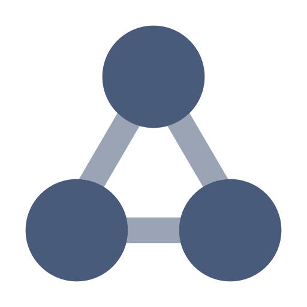

A serious, long-term foundation for document rendering in Odoo, bringing next-generation PDF engines into real-world deployments without disrupting existing QWeb templates.
A new rendering path
Enable a modern renderer without touching legacy reports. OrbitPDF runs alongside wkhtmltopdf so teams can adopt it step by step.

Multi-renderer flexibility
OrbitPDF is not fixed to one engine. It works with PlutoPrint today and can extend to additional renderers with minimal changes.
Rendering efficiency
OrbitPDF improves rendering efficiency across real Odoo workloads. Reports complete faster, and systems maintain stable performance.
The Forces Behind OrbitPDF
- Developers constrained by HTML written for wkhtmltopdf instead of following modern and consistent web standards.
- Teams losing time on report layouts because rendering behavior requires repeated adjustments to achieve stable results.
- Businesses impacted by slow PDF generation that increases infrastructure usage and operational cost during heavy workloads.
- Teams preparing for newer rendering engines and requiring a gradual adoption path that avoids disrupting current deployments.
- Organizations concerned about long-term stability as wkhtmltopdf becomes outdated and increasingly difficult to maintain.
- Implementers wanting a modern renderer that can be enabled per report without touching existing QWeb templates.
PlutoPrint, Where the Path Begins
PlutoPrint represents a kind of engineering that is both rare and necessary today. It does not attempt to behave like a browser, nor does it inherit assumptions carried over from screen-oriented rendering engines. Its premise is straightforward: a document renderer should be designed around documents, not adapted from systems built for interactive layouts.
At its center is a clean document model, where HTML, CSS, page size, margins and metadata belong
together with clarity. PlutoPrint follows the path modern paged media expects:
HTML > CSS > Layout > PDF.
The process is purpose-built for documents, rather than derived from browser behavior
or legacy WebKit implementations.
The architecture is intentionally constrained:
compact enough to reason about, modern enough to remain relevant.
There is no accumulated complexity from past constraints,
no layers added to compensate for architectural mismatches.
PlutoPrint evolves through a lightweight structure that preserves coherence
as the system grows.
We chose PlutoPrint not because it is trending or widely adopted, but because in our evaluation it is coherent. The behavior of the engine aligns closely with its intended role. Deterministic layout, reliable page boundaries, and stable typography are treated as baseline requirements for the business documents Odoo produces, not as optional refinements.
Clarity in design leads to clarity in output.
The Engine-Agnostic Layer
OrbitPDF is not a renderer. It is the layer that stands between Odoo documents and the engines that transform them into PDF. PlutoPrint is the first engine connected to that layer, but it is not the limit of what the layer is designed to support.
The ecosystem is moving. wkhtmltopdf is aging. Browser-based engines change rapidly. Tools like Paper Muncher introduce new directions. In this environment, what businesses need is not another fixed dependency. They need a stable layer where engines can evolve without forcing documents to evolve with them.
PlutoPrint is the first engine on this path. OrbitPDF is the layer that keeps the path open.
Open Architecture, Solid Foundation
OrbitPDF is built on an open architecture. The structural rules that govern document layout, pagination, and rendering are explicit, inspectable, and stable. This foundation exists to ensure correctness, predictability, and long-term viability across engines and systems.
Above this foundation, higher-level design and workflow concerns are addressed without altering the underlying structure. Authoring, preview, and operational tooling evolve independently, allowing the core architecture to remain consistent over time.
The separation is deliberate. Architecture provides stability. Everything else is built on top of it.
How OrbitPDF Works in Odoo
1. Install OrbitPDF
Installing OrbitPDF adds an additional rendering option without changing Odoo's default behavior.
wkhtmltopdf remains the default engine, and all existing reports continue to render exactly as before
until an alternative engine is explicitly selected.
2. Choose the rendering engine per report
OrbitPDF allows each report to be rendered with a specific engine.
The original Paperformat is preserved, and the report template itself is not modified.
- Templates written with clean, standards-oriented HTML tend to behave consistently across engines and align naturally with PlutoPrint's document-based layout model.
- Templates that rely on wkhtmltopdf-specific behavior may produce different results under a modern rendering engine. OrbitPDF keeps this distinction explicit and fully under your control.
PlutoPrint is not compatible with wkhtmltopdf-style templates by design. Developers are expected to author templates using standard, document-oriented HTML and CSS. Templates written this way remain portable and tend to survive engine transitions, including the introduction of Paper Muncher.
3. Render, compare, and refine
Render the same report with different engines and compare the results side by side.
Templates written with document-oriented HTML tend to keep the same structure and page boundaries.
When differences appear, they indicate parts of the template that depend on legacy behavior
and can be refined to improve long-term consistency.
Frequently Asked Questions
What support is included with this module?
You are free to use, test, and deploy OrbitPDF in real environments.
If you modify or redistribute it, you must comply with the terms of the Mozilla Public License 2.0.
Support is provided for issues that originate from OrbitPDF itself, including bug reports and reproducible defects in the core behavior of the module.
Customization, project-specific implementation, template refactoring, or integration work are not included in this scope.
For specialized integrations, architectural guidance, or custom requirements, please work with a professional Odoo partner or contact us directly by email.
Does OrbitPDF replace Odoo's PDF report pipeline?
No. OrbitPDF does not replace Odoo's PDF report pipeline, nor does it attempt to enforce a single rendering model. OrbitPDF introduces a parallel rendering path that operates alongside Odoo's existing pipeline. wkhtmltopdf remains available and unchanged, and reports can opt into an alternative rendering engine on a per-report basis
More importantly, OrbitPDF is not a PDF renderer. It is a foundation layer that sits between Odoo documents and the engines that transform them into PDF. Its role is to make rendering behavior explicit and controlled, so that engines can evolve without forcing documents or workflows to evolve with them.
In this sense, OrbitPDF exists to decouple document authoring from rendering technology. It does not replace Odoo's pipeline — it clarifies and extends it.
Does OrbitPDF require rewriting templates?
Yes — if you choose to render older reports that were optimized specifically for the legacy wkhtmltopdf engine.
Those templates often rely on behaviors or quirks unique to that engine, so switching to a modern renderer may require adjustments.
Outside of that case, you write reports exactly as you normally would, and the HTML/CSS is
far less constrained. Standards-oriented templates are easier to maintain and work more
naturally across engines.
What happens when Odoo releases Paper Muncher?
OrbitPDF currently operates with PlutoPrint only. Integration with Paper Muncher is planned once the engine demonstrates production-ready stability and behavior.
- Paper Muncher follows a browser-based approach. It treats HTML as a web runtime and focuses on improving fidelity and performance within a modernized rendering stack. This model aligns naturally with web-centric documents and evolving frontend layouts.
- PlutoPrint takes a document-first approach. It treats HTML as document markup and embeds pagination directly into the layout process, prioritizing predictable output and long-term stability over browser simulation.
OrbitPDF remains engine-agnostic by design, allowing teams to select the rendering model that best fits their operational requirements without committing to a single architectural path. My assessment is that Paper Muncher treats HTML as a live web runtime, while PlutoPrint treats it as document markup. That single distinction drives every meaningful difference between the two engines.
Where can I see the syntax and capabilities of PlutoPrint?
PlutoPrint is built on top of PlutoBook, an independent core project that provides the underlying document model, layout logic and reference implementation. Both projects are open and documented separately: github.com/plutoprint
How does OrbitPDF connect to PlutoPrint library?
OrbitPDF is not a renderer. It is the layer that lets Odoo work with multiple rendering engines. PlutoPrint is simply the first engine connected to this layer. OrbitPDF can extend to additional engines without changing templates or workflows.
Where can I get support for the module?
For issues directly related to OrbitPDF, including questions or bug reports, please contact jupetern24@gmail.com. For discussions regarding the roadmap or advanced technical details of PlutoPrint, please contact plutoprint@yahoo.com.